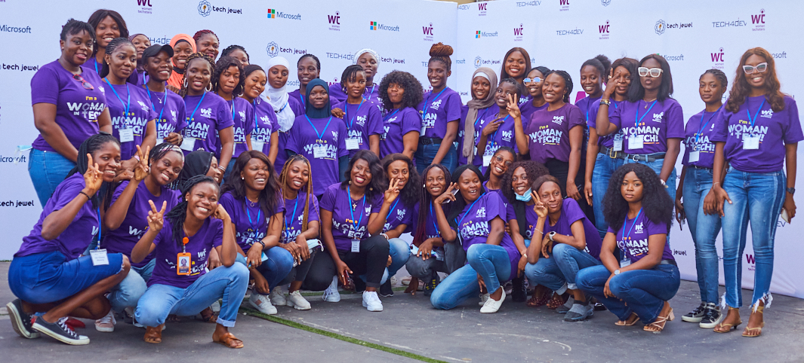
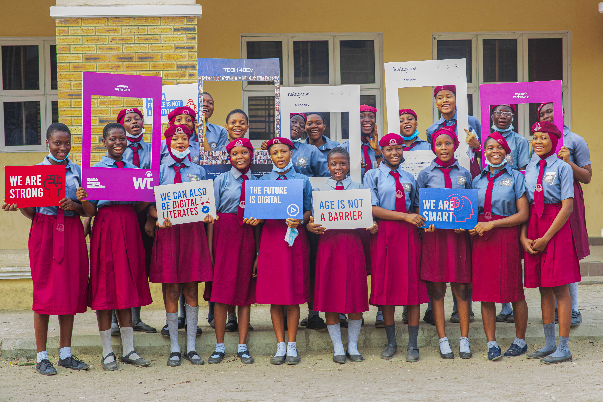

Anticipate #DigitalForAllChallenge2.0



To equip Africans with digital and life skills that foster economic prosperity, financial freedom and sustainable development
To create opportunities and platform for Africans to access decent work and entrepreneurship through digital skills empowerment and advocacy
Direct beneficiaries of Tech4Dev’s programmes
Indirect beneficiaries of Tech4Dev’s programmes
States reached
Beneficiaries facilitated to suitable jobs
African countries reached: Nigeria, South Africa, Ghana, Kenya and Egypt
According to the International Finance Corporation (IFC), about 230 million jobs in Sub-Saharan Africa will require digital skills by 2030. This figure is due to increasing use of technology and automation of jobs. At Tech4Dev, we prepare people for the future of work by creating opportunities for decent work through technology-based training, which include coding skills, deep tech skills, employability skills and basic digital skills

The Women Techsters initiative is aimed at bridging the digital and technology knowledge divide between men and women as well as ensuring equal access to opportunities for all. We are empowering girls and women across Africa with varying degrees of digital, deep tech and soft skills required within the technology ecosystem.
The Women Techsters Initiative will train 5 million across Africa by 2030.

The Emerging Market model will train 36,000 youth over a 1-year period in through a blended learning approach: online and physical through skill training and youth centres across Nigeria. This would be achieved through multi-year collaboration with four strategic Federal Government Ministries and 12 state governments.

The BDL-SN is designed to reach 1000 beneficiaries, in 10 rural clusters, across 10 states in Southern Nigeria, targeting 50% vulnerable women and girls, 30% People Living with Disability (PLWD) e.g mobility, speech, polio, etc, and 20% for other vulnerable groups.
The training will be implemented across the following Southern States: Ekiti, Oyo, Akwa-Ibom, Delta, Edo, River, Ogun, Abia, Enugu, Anambra
logo carousel
If you would like to know more about what we do
send us a message